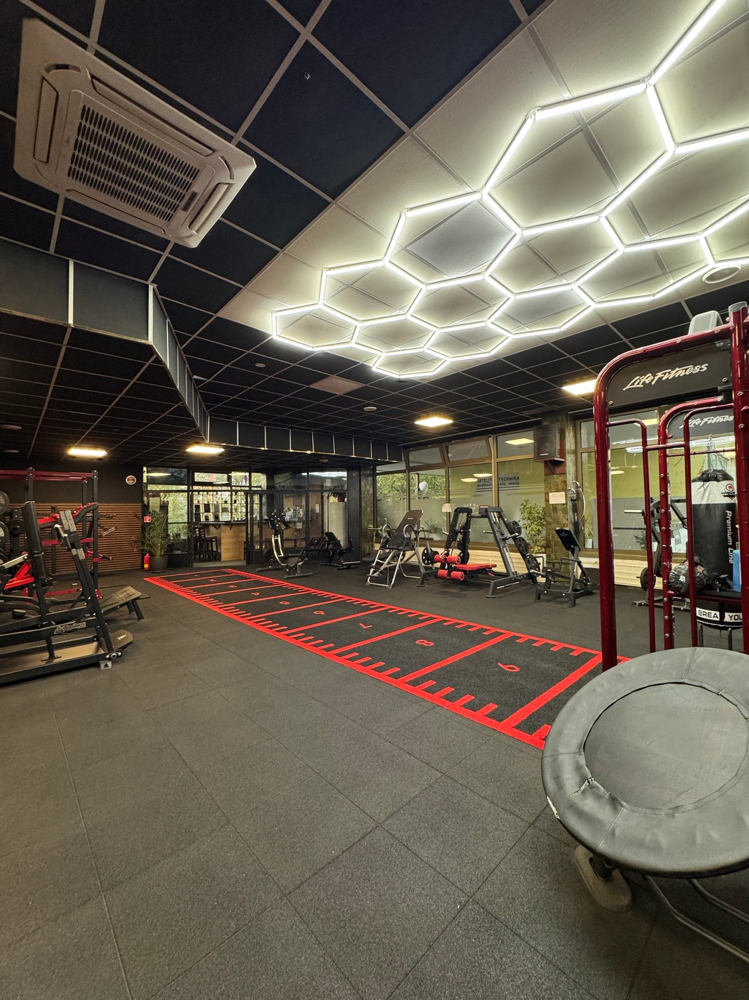

Fitness a bojové športy Lipa Centrum, Nitra
Tu sa nehrá na fitko. Tu sa trénuje.
Plne klimatizované fitko na Výstavnej 6: stroje, voľné váhy, kardio, funkčná zóna so šprintérskou dráhou a samostatná miestnosť s tatami.
Prečo GYM KLUB
Všetko na tréning pod jednou strechou
- 01
Sedem priestorov
Hlavná sála so strojmi, druhá sála s kladkami, kardio pri oknách, voľné váhy, funkčná zóna a tatami. Silový, kondičný aj bojový tréning na jednom mieste.
- 02
Tréneri na fitness aj boj
Osobný tréning, MMA, Jiu Jitsu, Luta Livre, Krav Maga, pilates a zdravý chrbát. Inštruktori začnú aj s úplným začiatočníkom.
- 03
Bez objednávania
Na samostatný tréning stačí prísť počas otváracích hodín. Jednorazový vstup alebo mesačná permanentka, MultiSport aj Upbalansea.
Priestory
Pozrite sa dnu skôr, než prídete
Fotky sú z 26. septembra 2026, priamo z prevádzky. Hlavná fotka je priestorová: pohnite myšou alebo potiahnite prstom.

Služby
Vyberte si, ako chcete trénovať


Členstvá
Začnite jedným vstupom
Jednorazový vstup bez viazanosti alebo mesačná permanentka. Overiť Ceny, podmienky a spôsob platby sú prevzaté z gymklub.sk (27. 9. 2026). Pred zverejnením ich potvrdiť s prevádzkou.
-
Jednorazový vstup
6 € / 1 vstup
Príďte, kedy sa vám hodí, bez viazanosti. Vstup do celého fitness centra.
Prísť si zacvičiť -
Pri pravidelnom tréningu
Permanentka
50 € / mesiac
Neobmedzené fitness tréningy počas mesiaca. Od deviateho vstupu v mesiaci vychádza lacnejšie než jednotlivé vstupy.
Prísť si zacvičiť -
Permanentka študent
42 € / mesiac
Mesačná permanentka pre študentov. Pri kúpe a vstupe ukážte platný študentský preukaz.
Prísť si zacvičiť
- Príďte počas otváracích hodín. Na samostatný fitness tréning sa netreba objednávať. Vstup zaplatíte na recepcii.
- Zoberte si čistú obuv, uterák a vodu. Šatne a sprchy sú k dispozícii. MultiSport alebo Upbalansea ukážte pri príchode.
- Chcete lekciu alebo trénera? Na lekciu príďte podľa rozvrhu, osobný tréning dohodnete priamo s trénerom.